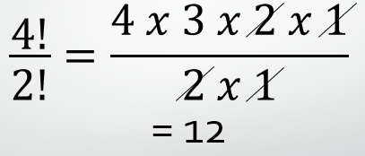
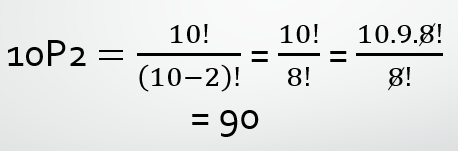
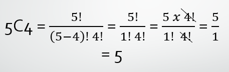

Notasi Faktorial
Notasi Faktorial merupakan Perkalian bilangan dengan bilangan berurutan dari bilangan n terus mengecil sampai bilangan 1 (satu). Notasi faktorial ditulis dengan tanda seru (!).
Rumus:
$$n! = n \times (n - 1) \times (n - 2) \times \ldots \times 2 \times 1$$
Contoh Soal:
Proses Penyelasan:
1. Penjabaran Nilai Faktorial:$$\frac{4!}{2!} = \frac{4 \times 3 \times 2 \times 1}{2 \times 1}$$
3. Hasil Akhir Setelah Penyederhanaan:$$4 \times 3 = 12$$
Penjelasan:
- Langkah 1 (Definisi Faktorial): Simbol tanda seru \(!\) berarti kita mengalikan angka tersebut dengan angka-angka bulat di bawahnya hingga mencapai angka 1. Jadi, \(4!\) dijabarkan menjadi \(4 \times 3 \times 2 \times 1\), dan \(2!\) dijabarkan menjadi \(2 \times 1\).
- Langkah 2 (Penyederhanaan): Setelah menjabarkan faktorial, kita dapat menyederhanakan pecahan dengan mencoret angka-angka yang sama di pembilang dan penyebut. Dalam hal ini, angka \(2\) dan \(1\) di pembilang dan penyebut dapat dicoret karena mereka muncul di kedua tempat.
- Langkah 3 (Perhitungan Akhir): Setelah penyederhanaan, kita hanya perlu mengalikan angka-angka yang tersisa di pembilang, yaitu \(4\) dan \(3\). Hasil dari \(4 \times 3\) adalah \(12\), yang merupakan hasil akhir dari ekspresi \(\frac{4!}{2!}\).
Permutasi
Permutasi adalah susunan atau pengaturan ulang dari sejumlah objek atau elemen dalam suatu urutan tertentu.
Rumus:
$$nP_r = \frac{n!}{(n - r)!}$$
Keterangan:
n = Jumlah total objek dalam kumpulan
r = Jumlah objek yang dipilih dari kumpulan
Contoh Soal:
Proses Penyelasan:
1. Masukkan ke Rumus Permutasi:$$_{10}P_{2} = \frac{10!}{(10 - 2)!}$$
2. Hitung Pengurangan dalam Kurung:$$_{10}P_{2} = \frac{10!}{8!}$$
3. Jabarkan Pembilang hingga Angka yang Sama dengan Penyebut:$$_{10}P_{2} = \frac{10 \times 9 \times \cancel{8!}}{\cancel{8!}}$$
4. Hasil Akhir Setelah Penyederhanaan:$$_{10}P_{2} = 10 \times 9 = 90$$
Penjelasan:
- Langkah 1 (Definisi Rumus): Permutasi \(_{10}P_{2}\) dihitung dengan membagi faktorial angka total (\(10!\)) dengan faktorial dari selisihnya (\(10-2\))!. Hasil pengurangannya adalah \(8!\).
- Langkah 2 (Pembagian/Penyederhanaan): Jabarkan \(10!\) secara menurun, namun cukup berhenti di angka \(8!\) karena di bagian bawah (penyebut) sudah ada \(8!\). Dengan begitu, kita bisa langsung "mencoret" \(8!\) di atas dan di bawah.
- Langkah 3 (Perkalian Sisa): Setelah bagian \(8!\) ditiadakan, kita hanya menyisakan perkalian sederhana yaitu \(10 \times 9\). Hasil akhir dari perhitungan ini adalah 90.
Kombinasi
Kombinasi adalah pemilihan objek tanpa memperhatikan urutannya. Kombinasi berbeda dengan permutasi yang memperhatikan urutan objeknya.
Rumus:
$$nC_r = \frac{n!}{r!(n - r)!}$$
Keterangan:
n = Jumlah total objek dalam kumpulan
r = Jumlah objek yang dipilih dari kumpulan
Contoh Soal:
Proses Penyelasan:
1. Masukkan ke Rumus Kombinasi:$$_5C_4 = \frac{5!}{(5 - 4)! \ 4!}$$
2. Operasi Pengurangan:$$_5C_4 = \frac{5!}{1! \ 4!}$$
3. Penjabaran dan Penyederhanaan:$$_5C_4 = \frac{5 \times \cancel{4!}}{1! \ \cancel{4!}}$$
4. Hasil Akhir Setelah Penyederhanaan:$$_5C_4 = \frac{5}{1} = 5$$
Penjelasan:
- Langkah 1 (Definisi Rumus): Kombinasi \(_{5}C_{4}\) dihitung dengan membagi faktorial angka total (\(5!\)) dengan faktorial dari selisihnya (\(5-4\))!. Hasil pengurangannya adalah \(1!\).
- Langkah 2 (Pembagian/Penyederhanaan): Jabarkan \(5!\) menjadi \(5 \times 4!\). Karena di bagian bawah (penyebut) sudah ada \(4!\), kita bisa langsung "mencoret" atau meniadakan \(4!\) tersebut agar perhitungan lebih sederhana.
- Langkah 3 (Hasil Akhir): Setelah angka yang sama dicoret, tersisa angka \(5\) di atas dan \(1!\) (yang bernilai 1) di bawah. Hasil dari \(5\) dibagi 1 adalah 5.